Префектура Окинава · королевство Рюкю · еда
Кухня, приплывшая по морю: как торговля создала рюкюскую еду
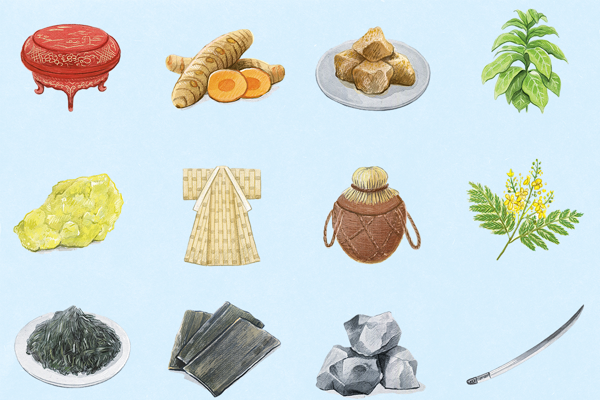
Королевство Рюкю около 450 лет, с XV по XIX век, жило морской торговлей со всей Азией. Корабли возили не только товары, но и вкусы, и многое из того, что сегодня называют окинавской едой, когда-то приплыло издалека.
Ламинария
Северные водоросли на южных островах
Страна, так тесно связанная с заморскими соседями, не могла не перенять у них и кулинарных привычек. Самый яркий пример продукта, приплывшего из-за моря, это ламинария, по-японски конбу. В окинавских супермаркетах её продают под местными названиями вроде «кариюси», и сами окинавцы даже не задумываются, откуда она: без ламинарии окинавская кухня просто немыслима. Но это водоросль холодных морей, у берегов Окинавы она не растёт. Как же она здесь оказалась?
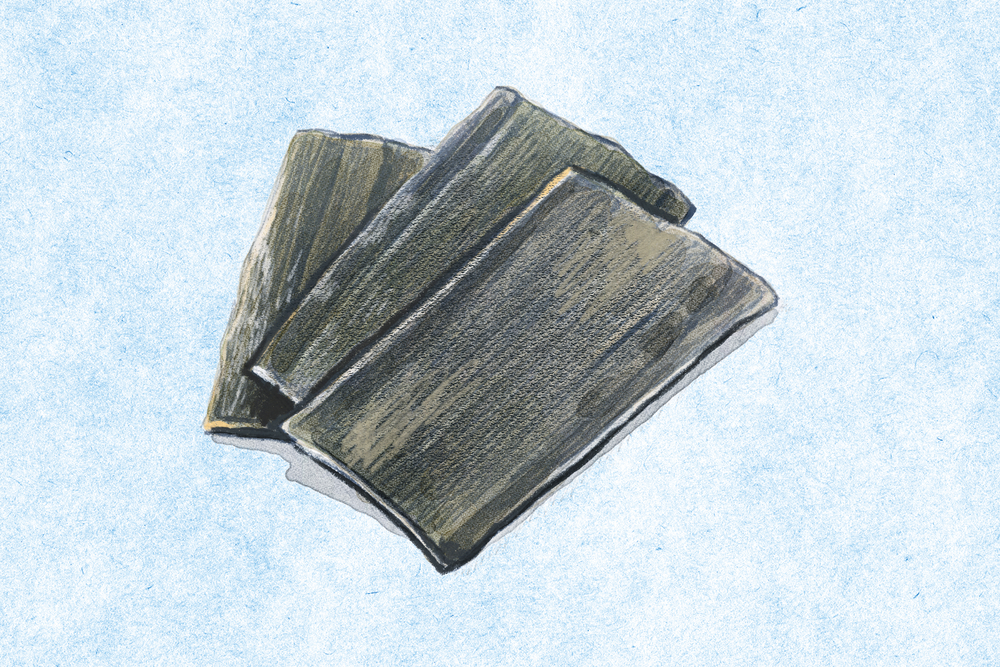
В эпоху Эдо (1603–1868) в Японии развилось морское судоходство, и торговые корабли оживили всю экономику. Самые известные из них ходили вдоль побережья Японского моря и связывали далёкий северный остров Эдзо (нынешний Хоккайдо) с торговыми городами центральной Японии. Среди грузов была и ламинария. Через нынешнюю префектуру Тояма её везли в Осаку, «кухню страны», а оттуда через княжество Сацума на юге Кюсю она попадала в Рюкю. Кстати, Тояма до сих пор входит в число японских лидеров по потреблению ламинарии.
В Китае тогда были распространены болезни щитовидной железы, и ламинарию считали от них хорошим средством, поэтому спрос на неё рос. Лёгкая, долго хранится, мало места занимает: для перевозки по морю лучше не придумаешь. А главное, она очень вкусная. Так рюкюсцы и стали класть её в свои блюда.
Был и встречный поток. Из Китая через Рюкю в Тояму шло лекарственное сырьё для китайской медицины. Редкие травы из Рюкю в Тояме смешивали в снадобья, и их разносили по всей стране знаменитые тоямские торговцы лекарствами.
Сахар
Чёрный сахар и батат
Теперь посмотрим шире. В истории есть так называемые мировые товары: золото, серебро, хлопок и сахар. Кофе и чай тоже, и оба отлично сочетаются с сахаром, который покорил весь мир. Когда-то его ценили даже как лекарство, и для Запада он был дорогим азиатским товаром.
История сахара уходит в IV век до нашей эры, к походу Александра Македонского в Индию. Его воины встретили сахар на севере Индии и поразились, что есть растение, из которого добывают мёд. В Рюкю сахар, особенно чёрный, делали и раньше и возили на кораблях как подарок, но в 1623 году здесь наладили его массовое производство. Способ варить сахар с помощью тягловых животных привёз из китайской провинции Фуцзянь человек по имени Синдзё Гима.
Батат вскоре прижился и в Японии, а сахар продавался очень хорошо. Япония шла к закрытию страны, и рюкюский сахар ценился высоко и шёл по большой цене. Он стал для Рюкю источником японского серебра, а на это серебро вместе с ламинарией рюкюсцы отправлялись торговать в Китай.
И ламинарию, и сахар королевство, конечно, ввело и в собственную кухню. При дворе в Сюри даже появились два особых ведомства: по ламинарии и по сахару. Можно сказать, что рюкюская еда пришла из-за моря. Возьмём чампуру: само слово индонезийское и значит то же самое, «смешивать». Гоя-чампуру, жаркое с горькой тыквой, одно из самых знакомых окинавских блюд, и если знать, откуда его название, в нём чувствуется дыхание морского королевства.
Соба
Как появилась окинавская соба
Ещё одна визитная карточка Окинавы это окинавская соба. Сохранилось меню угощения для китайских послов сакухоси, прибывших в 1526 году утвердить на престоле короля Сё Сэй. В нём значится «фэньтан», что-то вроде блюда из лапши (о нём пишет посол Чэнь Кань в «Записках о посольстве в Рюкю»). Специалисты считают это прообразом окинавской собы и самым ранним упоминанием о ней. Есть и другие версии: что это была не длинная лапша, а нечто вроде китайской резаной лапши даосяомянь, или вовсе блюдо из агар-агара. Единого мнения нет.
В Рюкю выращивали пшеницу, так что приготовить такое блюдо было можно. Но в любом случае это было дорогое угощение, а не любимая еда островитян, как сегодня. Что же тогда точно можно назвать прообразом окинавской собы?
Перенесёмся в 1902 год. Королевство Рюкю уже стало японской префектурой Окинава. В газете того времени вышло объявление об открытии лавки «китайской собы», где обещали «повара, приглашённого из империи Цин». Лавка процветала под названием «Тодзин-соба», то есть «соба чужеземцев». Бульон здесь варили на соевом соусе, и по сути это был современный сёю-рамэн. Да, именно эта лапша позже стала называться в Японии «сина-соба» и «тюка-соба». Корни окинавской собы и японского рамэна одни и те же. Свиные рёбрышки соки и грудинка санмайнику в окинавской собе играют ту же роль, что чашу в рамэне.
Япония одну за другой вела войны с Китаем, с Россией, участвовала в Первой мировой, и в 1916 году вышло распоряжение не использовать название «сина-соба». После долгих колебаний блюдо получило имя «окинавская соба». Она всегда менялась вместе со временем и только так стала такой, какой мы её знаем.
Вывоз
Что Рюкю продавало
Историк Рюкю, рассказавший нам о торговле королевства, собрал главные товары, которые уходили с островов за море.
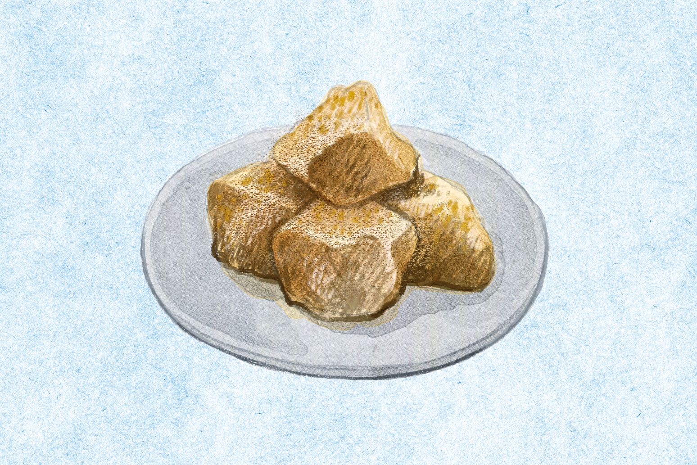
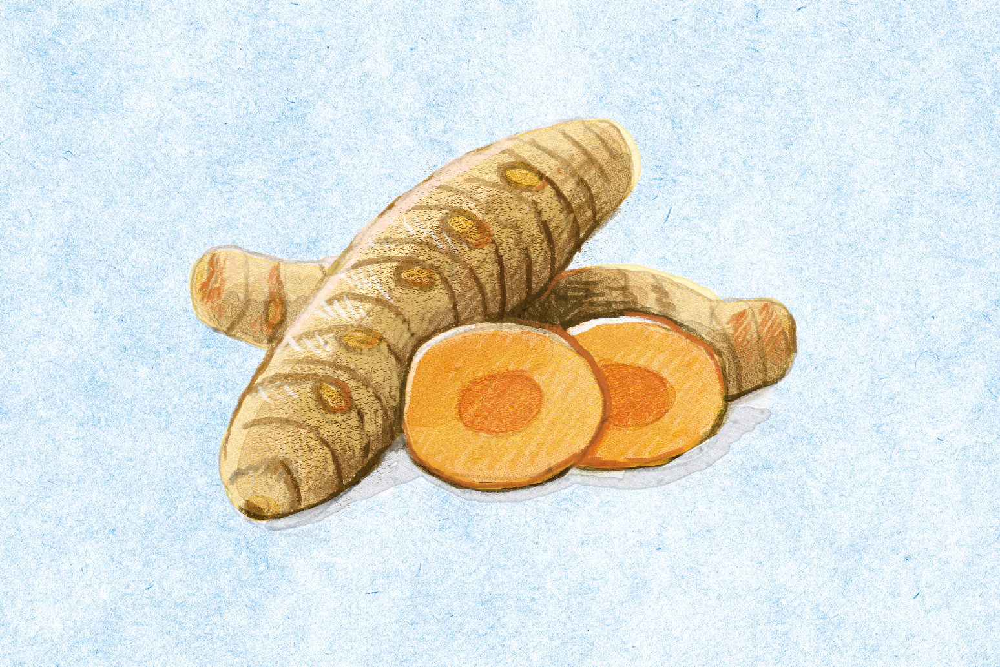
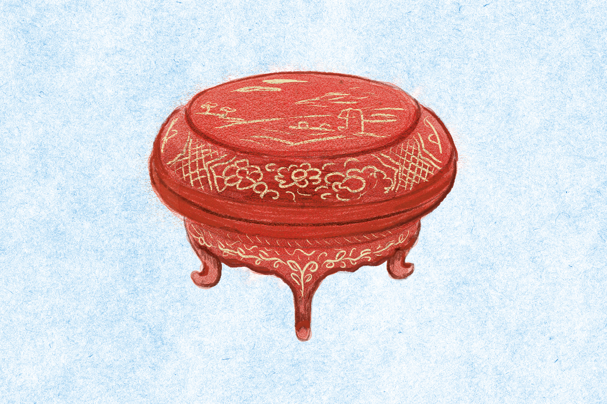
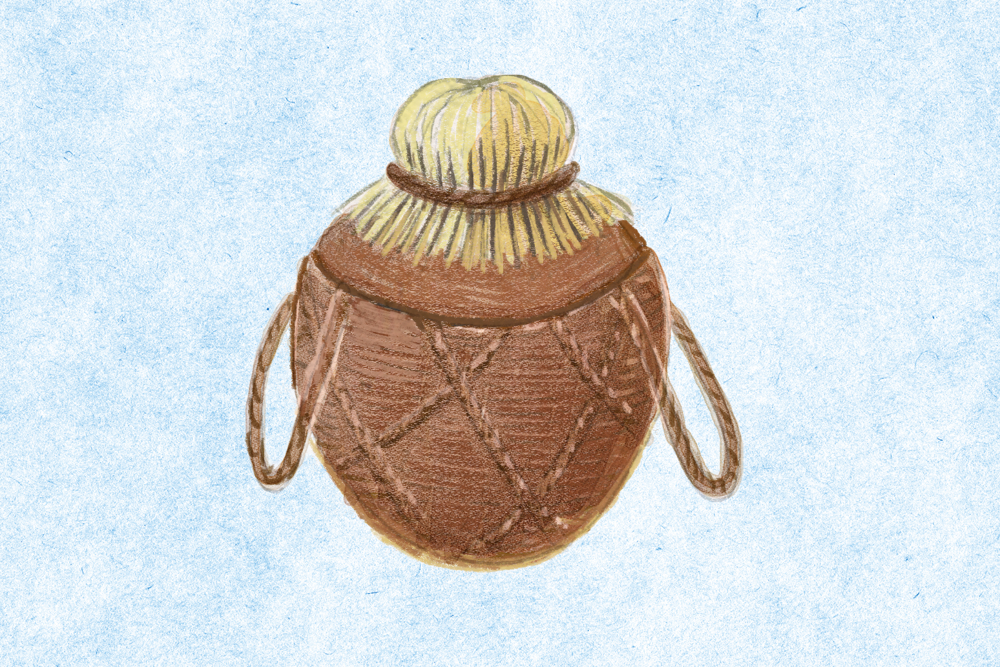
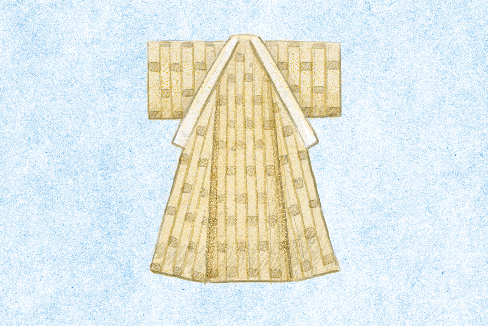
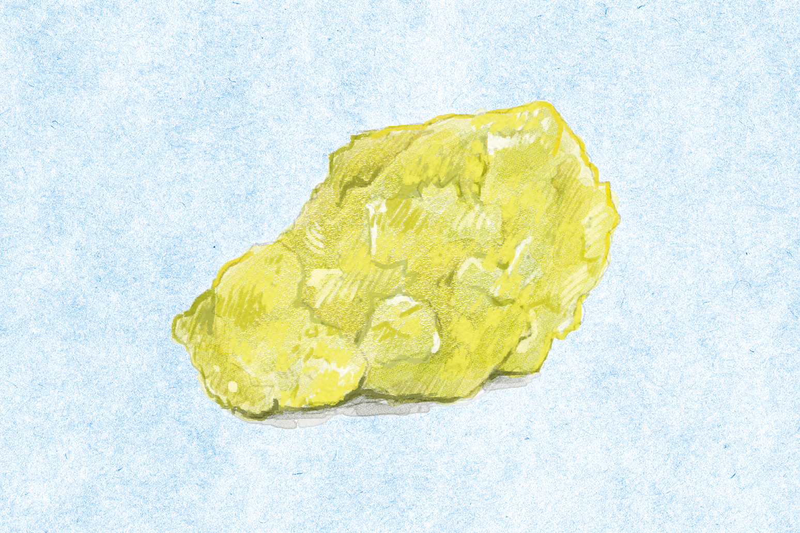
Ввоз
Что Рюкю покупало
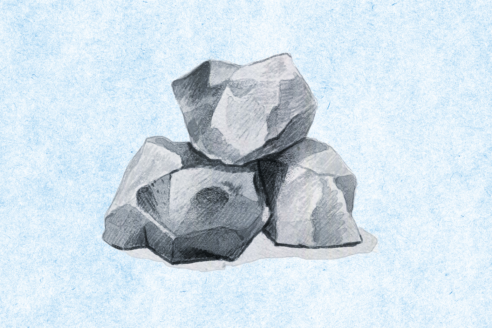
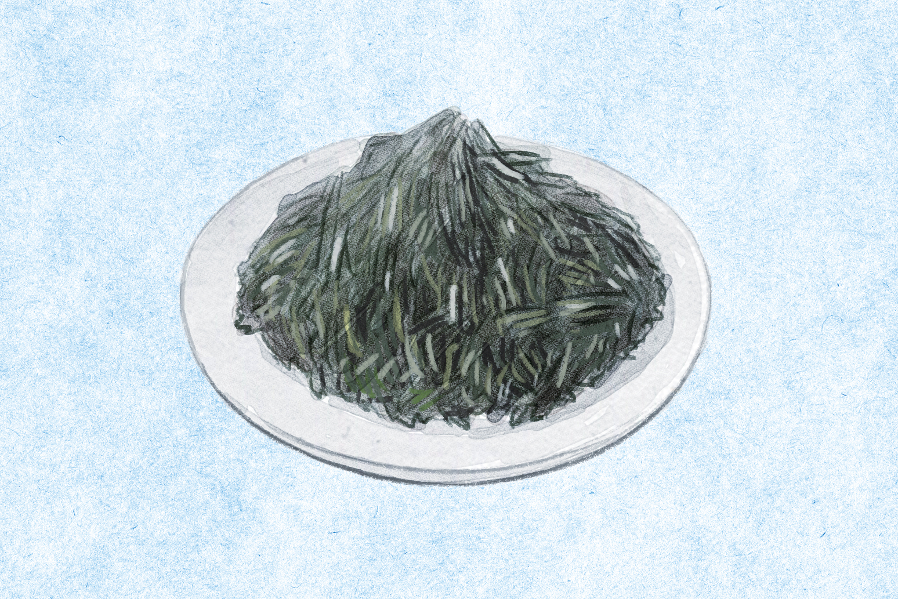
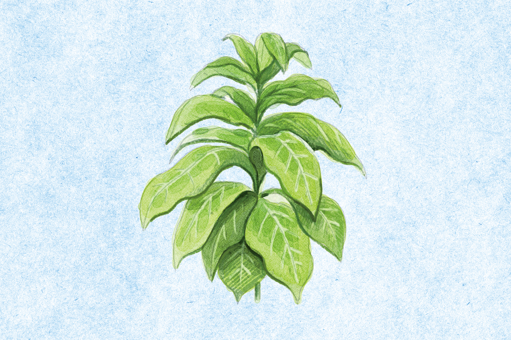
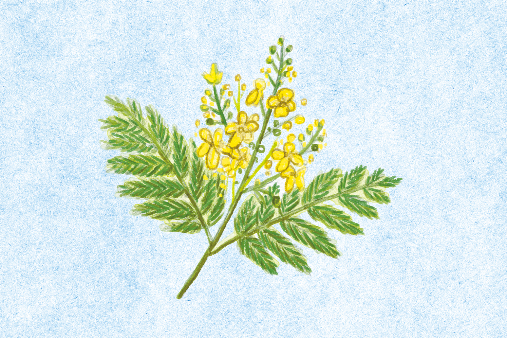
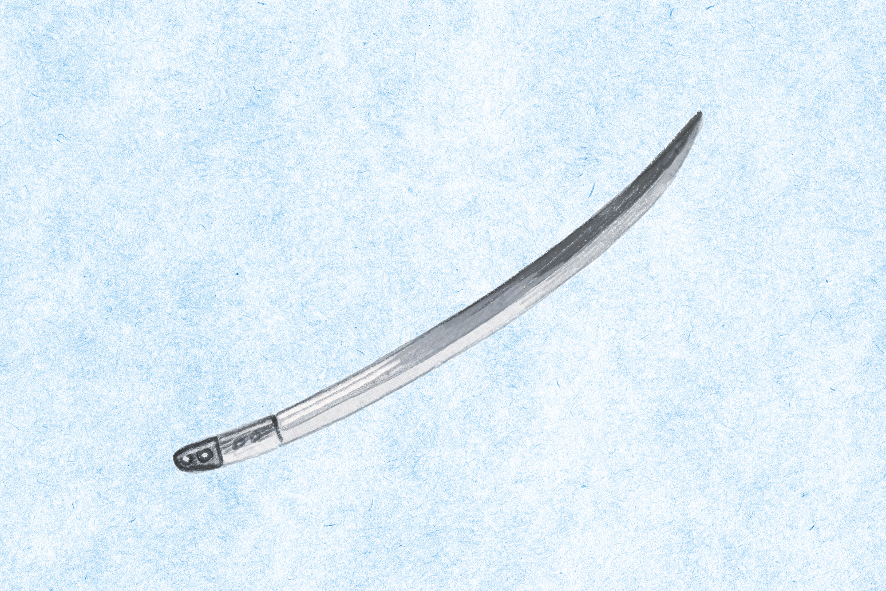
Сегодня
Рюкюская кухня: пиры, будни и праздники
Рюкюская кухня складывается из трёх частей: придворной кухни для приёма гостей, простой еды из местных продуктов и множества праздничных блюд. Так рассказывает председатель комитета, который добивается внесения рюкюской кухни в список нематериального наследия ЮНЕСКО. Она много лет работала клиническим диетологом в больнице и носит звание хранителя рюкюской кухни, которое присваивает префектура Окинава.
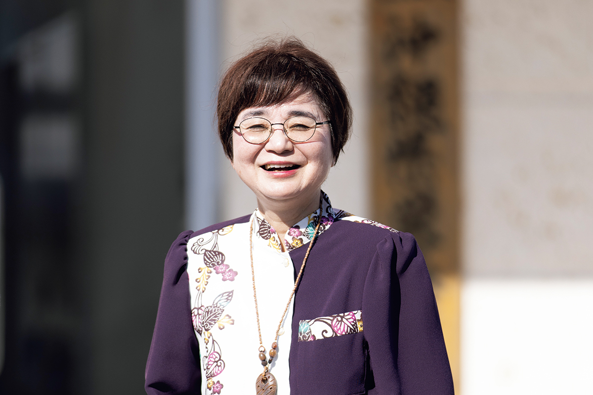
Угощения при дворе в Сюри называли «укансин рёри», кухней кораблей китайских послов. Сначала их готовили повара из свиты сакухоси, но к 1800-м годам за это взялись придворные повара. Они держались китайской формы большого императорского пира и при этом развивали свою кухню. После вторжения Сацумы, чтобы принимать сацумских наместников, придворных поваров отправляли учиться строгой японской кухне в Сацуму, и они получали там право готовить.
«В этой кухне живёт дух „утуимути“: уважать вкусы гостя и принимать его от души»
председатель комитета
Из Китая пришло умение использовать в свинине каждую часть туши, и такие блюда до сих пор стоят на окинавском столе.
Простая домашняя еда держится на мысли о том, что правильная пища предупреждает болезни. Умение готовить из того, что под рукой, передавалось в каждой округе от родителей к детям. Пример тому «набера-нбуси» из люффы: «нбуси» значит обжаренные продукты, тушённые в мисо.
«Если обжарить люффу, она даёт сладкий сок, „дудзиру“. Летом жарко, овощей мало, воды не хватает, а тыквенные в это время полны влаги. Такая еда помогает выжить, это „нутигусуй“, лекарство для жизни»
председатель комитета
Есть и свои блюда для особых дней. На праздник поминовения предков сими родня собирается у семейной гробницы, ставит перед ней многоярусные коробки с едой и беседует. Так связывают друг с другом людей, а людей с родными местами.
«Времена меняются, но я хочу сохранить связь через еду родных мест и мысль о том, что пища это лекарство. Я провожу кулинарные занятия для родителей и детей и рассказываю о нашей кухне. Хранят её прежде всего сами жители»
председатель комитета
Фото: Хонока Ёсимото (иллюстрации), Юкико Сираки.